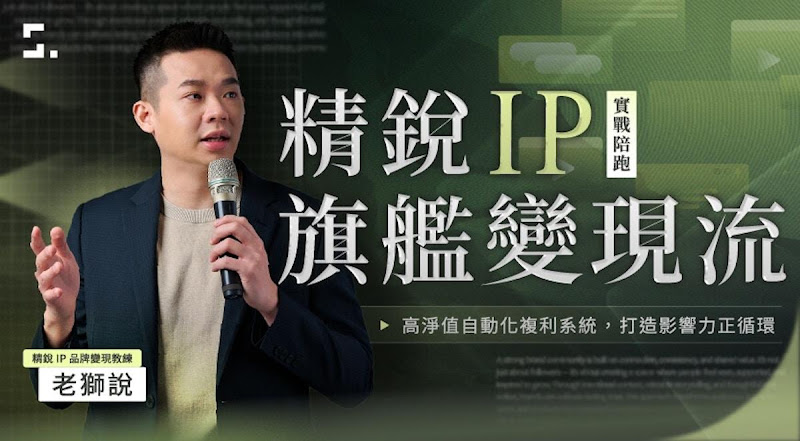

Meta Ads AI Connectors｜用 MCP 把廣告後台接進 Claude / ChatGPT 的官方路線
一句話摘要
老獅說Lion 這則 Facebook 貼文提醒：Meta Ads AI Connectors / MCP 正在把「拉報表、看成效、找問題素材」這類廣告日常工作接進 Claude / ChatGPT 等 AI 工具；廣告人的價值會從操作後台，轉向判斷、策略與下對問題。
原文：
https://www.facebook.com/Lionchung920/posts/1467040258799418/
---
原文重點
貼文主張可整理為：
- 廣告投手、小編、代操最耗時的工作之一，是每天切 Meta 後台、拉欄位、匯出 Excel、做日報週報。
- Meta 官方把廣告後台用 MCP 接給 Claude，AI 可以讀廣告帳號的真實數據，而不是靠截圖猜測。
- 使用者可用自然語言要求 AI：拉本月成效、比較素材、找出 CTR / 花費異常、判斷哪組受眾轉換較便宜。
- 貼文提醒，當「看報表」被 AI 自動化，個人品牌與行銷工作者的價值會從會操作，轉向會判斷。
- 圖卡中提到官方開放、免費 beta、官方工具、以及「Meta 後台打開給 Claude」等設定導向內容。
---
官方交叉驗證
Brave Search 與官方頁面可確認這不是單純第三方外掛概念：
- Meta for Business 的「Introducing Meta Ads AI Connectors」頁面說明，Meta ads AI connectors 包含 Meta 的 ads model context protocol（MCP）server 與 ads command line interface（CLI），讓廣告主能把廣告帳號安全地、經 Meta 驗證地連到 AI agent。
- Meta Developers 文件「Connect AI Agents to Meta with MCP」列出可支援的用戶端脈絡，包括 Claude Desktop、Claude Code、ChatGPT（網頁）、Codex app、Codex CLI、Cursor app / CLI 等。
- 官方描述的核心能力是讓 AI 工具讀取與操作 Meta 廣告相關資料，產生報告、理解真實 campaign performance、管理 campaign / catalog / audience insights 等。
官方來源：
- Meta Developers MCP documentation： https://developers.facebook.com/documentation/mcp
- Meta for Business： https://www.facebook.com/business/news/meta-ads-ai-connectors
---
這對廣告工作流代表什麼？
對投手 / 代操 / 小編而言，MCP 化的廣告後台會把工作拆成兩層：
- 機械層：拉資料、整理欄位、製作週報、列出 CTR / CPC / CPA / ROAS 異常項目。
- 判斷層：理解品牌目標、辨識素材疲乏、解釋轉換異常、決定預算與訊息策略。
AI 很適合先處理機械層，尤其是「每次都差不多、但很耗時間」的報表與初步診斷；但最終是否關素材、調預算、改受眾、改 offer，仍應由懂客戶、產品、季節性與品牌策略的人判斷。
---
可嘗試的 prompt 範例
若已完成 Meta Ads MCP / AI Connectors 設定，可用這類提示測試：
- 請整理過去 7 天各 campaign 的 spend、CTR、CPC、CPA、ROAS，列出前 5 個需要注意的異常。
- 請比較這三組 ad set 的轉換成本與素材疲乏跡象，給我應該加碼、觀察或暫停的建議。
- 請把本週廣告成效整理成給客戶看的週報，語氣專業、附上 3 個下週優化方向。
- 請找出花費高但轉換低的素材，並推測可能問題：受眾不準、素材疲乏、落地頁、offer 還是追蹤事件。
---
2026-07-27 補充：Google Doc SOP 與課程 CTA
欒帥補充的 Google Doc《Meta × Claude 串接 SOP》把前述概念整理成可照做的五步設定：
- 先確認 Claude 帳號可使用「連接器 / Connectors」與「自訂連接器 / custom connector」，並使用有廣告帳號管理權限的 Meta 帳號授權。
- 在 Claude 設定中進入 Connectors，選擇新增自訂連接器。
- 名稱可填 `Meta Ads`，遠端 MCP URL 填入 `https://mcp.facebook.com/ads`；Google Doc 版本提到 OAuth client ID / secret 可留空，實際仍應以 Claude 與 Meta 當下官方畫面為準。
- 進入 Meta 授權流程，確認登入身分、可存取項目與廣告帳號權限。
- 完成後可用自然語言要求 Claude 拉月報、比較素材、檢查 CTR / 花費，或比較不同受眾的轉換成本。
這份文件也提醒：AI 建立的廣告活動預設應保持「暫停」或需人工確認，花錢或修改投放的動作不應無人覆核。這與本文原本的風險建議一致：先從讀取、報表與診斷開始，再逐步設計 approval step。
補充文件末段是「老獅說」免費體驗課的導流 CTA，主張把 Meta 數據接上 AI 後，下一步是把流量變成私域留量與 IP 變現流；場次、價格與名額屬課程行銷資訊，具時間敏感性，不視為 Meta / Anthropic 官方產品事實。

圖片說明：綠黑色課程宣傳主視覺，左側為講師拿麥克風，主標「精銳 IP 旗艦變現流」，副標強調「高淨值自動化複利系統・打造影響力正循環」，用於辨識 Google Doc 後段的課程 CTA，而非 Meta Ads AI Connectors 官方圖。
補充來源：
- Google Doc： https://docs.google.com/document/d/1jaKfHe2O-Iuvs85qldVc6NaQs6_SBHjW/mobilebasic
- Claude custom connectors / remote MCP 說明： https://support.claude.com/en/articles/11175166-get-started-with-custom-connectors-using-remote-mcp
---
風險與實務提醒
- 權限最小化：不要給 AI agent 超過任務需要的廣告帳號權限。
- 分清讀取與寫入：先從 read-only 報表分析開始，確認穩定後再考慮讓 AI 修改預算或 campaign。
- OAuth 與 token 安全：不要把 token、cookie、Business Manager 權限截圖貼到公開文件或聊天群。
- 人類覆核：任何關閉 ad set、調整預算、改素材、建立 campaign 的動作，都應有人工確認或 approval step。
- 追蹤資料品質：若 Pixel / CAPI / UTM / 轉換事件設定本身有問題，AI 分析也會跟著失真。
- 客戶資料保密：報表可能含有營收、受眾、投放策略與客戶商業機密，不能直接外流。
---
對 AI 學習雷達的價值
這則貼文是「MCP 正在進入商業後台」的重要案例。先前 MCP 常被看成開發者工具；Meta Ads AI Connectors 則把 MCP 帶進行銷與廣告營運，代表 AI agent 將逐步接上企業 SaaS 後台、CRM、報表系統與投放平台。
對課程或企業導入來說，這是很好的討論題：未來會被取代的不是懂策略的人，而是只會重複匯出資料、貼報表、照公式看指標的人。真正值得訓練的是「如何問對問題、如何驗證資料、如何做決策」。